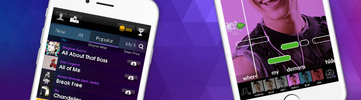
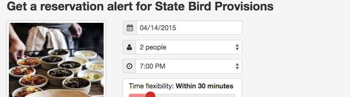
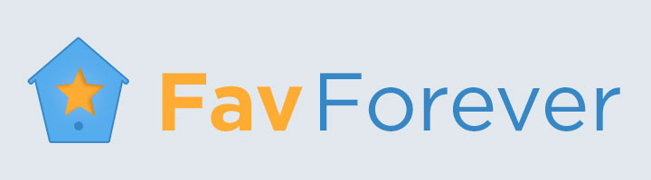
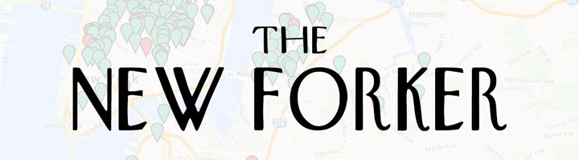
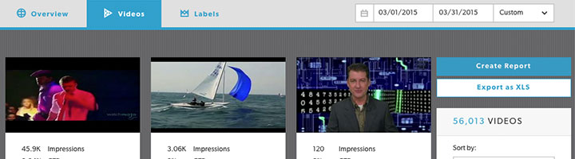
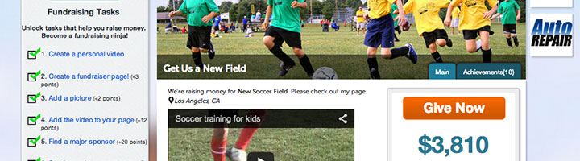
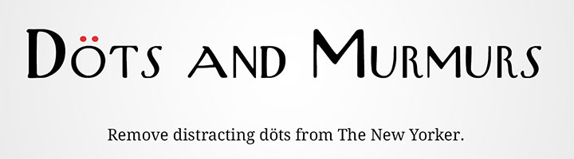
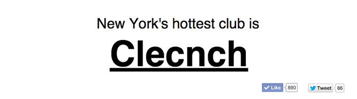

I like to build products that make people's lives easier or more fun. I currently lead product at Billboard and work on projects like Rezhound on the side.
Away from the computer, I'm a cook, improviser, and volunteer with with organizations like BUILD and The Sunbeam Foundation.
Product Manager
StarMaker is a karaoke-style singing game and talent discovery platform. The flagship StarMaker app and its sister app The Voice: On Stage are enjoyed by over 20 million aspiring pop stars around the world.
Side Project
I built Rezhound to help me get tables at the country's toughest-to-book restaurants and to teach myself to program in Python. It has since gained a loyal following of foodie fans and has been featured everywhere from Gizmodo to The New York Frickin' Times.
Side Project
Many longtime Twitter users were upset when the company retired the beloved star icon for favorites, in favor of a new heart icon. Three hours after the change, I released Fav Forever, a Chrome extension to bring the stars back. Mashable and The Verge want to #favforever.
Side Project
The New Forker maps the restaurants reviewed in The New Yorker’s Tables for Two column since 2005. Tables for Two reviews aren't really reviews. They're colorful and usually complimentary profiles of some of New York’s most interesting eateries, and they often leave me wanting to experience the places for myself.
Senior Product Manager
At SET Media (now a part of Conversant), my team built a suite of video ad reporting tools to demonstrate to clients the power (and sheer coolness) of SET's computer vision and machine learning technology that matches ads with relevant videos.
Head of Product
Piggybackr was a crowdfunding platform designed specifially for groups and small organizations with limited online findraising experience: think classrooms, sports leagues, or volunteer clubs. Piggybackr helped groups achieve their fundraising goals by keeping leaders informed, members motivated, and donors engaged.
Side Project
The New Yorker insists on placing a dieresis over the second letter in a set of double vowels in words like "coöperate." I'm not a fan (and I'm not alone). So I created a Chrome extension that wipes the online version of the magazine clean of those distracting little dots.
Side Project
One of the greatest Saturday Night Live characters of the last decade was Bill Hader's Stefon. Stefon payed his last regular visit to the Weekend Update desk in 2013, but thanks to the Stefon-a-Tron, we'll always have a resource to find New York's hottest club.